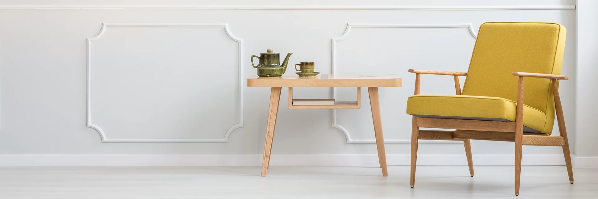
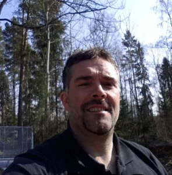
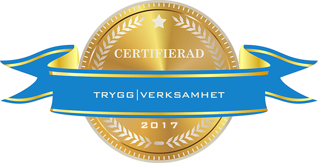

Ett hem att
längta hem till.
Från en ny altan till ett helt nytt hus. Vi hjälper dig med bygg och inredning i Borlänge med omnejd.
Dina idéer.
Vår nästa byggresa.
Det kan börja med ett kök som inte längre passar. Ett rum som saknas. Eller tanken på ett helt nytt hem.
Vi på Bygg & Inredning i Borlänge hjälper dig med både nyproduktion och förändringar i huset du redan har. Berätta vad du vill göra, så tittar vi på möjligheterna tillsammans.
Låt oss prata om ditt projektHantverk att
trivas med.
Uterum, kök och nya möjligheter.
Ett urval av bilder från våra arbeten.
Uterum & tillbyggnad
Plats för mer hemma.Köksrenovering
En ny vardag i köket.Altan & uterum
När inne möter ute.Tillbyggnad
Från stomme till nya rum.Invändiga snickerier
Detaljer som ger karaktär.Skjutdörrar & förvaring
Utrymmet gör skillnaden.Renovering
Hantverket bakom förändringen.Grundläggning
Här börjar något nytt.Stort eller litet.
Vi bygger vidare.
Från första konstruktionen till det sista snickeriet. Här är det vi kan hjälpa dig med.
Fråga oss om ditt projektNybyggnation
Dags att bygga nytt? Vi utför byggarbeten för nyproduktion och pratar gärna igenom dina planer för ett nytt hus.
Ombyggnad
När behov förändras kan huset behöva göra det också. Vi hjälper dig att bygga om och ta vara på utrymmet som finns.
Tillbyggnad
Mer plats för vardagen. Vi hjälper till med tillbyggnader och går igenom hur den nya delen kan möta det befintliga huset.
Renovering
Ta hand om huset du har. Vi utför renoveringar och diskuterar gärna önskemål, material och omfattning inför arbetet.
Altaner & uterum
Skapa en plats för långa frukostar och fler stunder utomhus. Vi bygger altaner och uterum efter dina förutsättningar.
Kök
Vi hjälper dig med köksrenoveringen, så att hemmets mest använda rum kan passa din vardag bättre.
Takarbeten
Vi utför takarbeten och takläggning. Ring oss och berätta om ditt tak och vad som behöver göras.
Snickerier
Från panel till förvaring och andra snickeriarbeten. Vi hjälper dig att få både helheten och detaljerna på plats.

Bra byggprojekt
börjar med människor.
Hos oss börjar det med att vi lyssnar på vad du vill göra.
Går du i bygg- eller renoveringstankar gör vi gärna ett besök och går igenom dina önskemål. Vårt mål är att du ska bli nöjd med arbetet och vilja anlita oss igen.
Vi finns i Nordanö och arbetar i Borlänge med omnejd. Både nya och återkommande kunder är välkomna.

Certifierad Trygg Verksamhet.
Sigillet är daterat 2017.
Ett tydligt pris.
För just ditt projekt.
Omfattning, material och förutsättningar skiljer sig mellan olika byggen. Därför tar vi fram ett prisförslag utifrån det du vill göra.
Be om ett prisförslagKostnadsfri offert
Vi lämnar ett prisförslag utan kostnad. Ring eller mejla och berätta om dina planer.
- 1
Berätta om din idé
Vad vill du bygga eller förändra?
- 2
Vi går igenom projektet
Vi gör gärna ett besök och tittar på förutsättningarna.
- 3
Du får ett prisförslag
Ett underlag att ta ställning till.
Kan du använda ROT-avdrag?
Det beror på arbetet och dina förutsättningar. Kontrollera aktuella villkor hos Skatteverket.
Läs om ROT hos SkatteverketSka vi göra något
bra av din idé?
En första tanke räcker.
Ring eller mejla, så tar vi det därifrån.